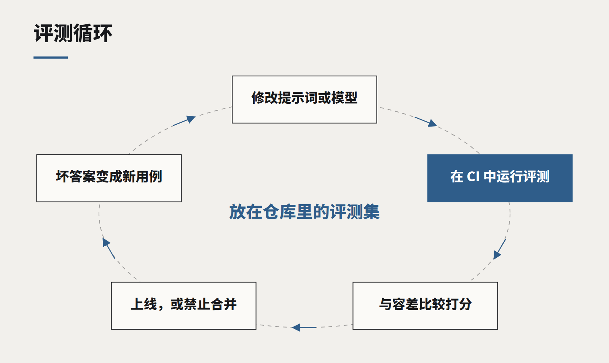

评测集，就是新时代的单元测试
一个没有评测集的 AI 功能，是一个无法安全修改的功能。像对待测试代码一样对待评测集，上线的恐惧就会消掉一大半。

问一个团队怎么知道他们的 AI 功能是好的，诚实的回答往往是：我们试了很多次，感觉还不错。在单元测试普及之前，软件就是这样测试的。它对演示有效，却会在第一次有人改提示词、升级模型、往知识库里加文档时失效——没人说得清效果是变好了还是变差了。
解决办法和二十年前软件工程找到的一样：把检查写下来，自动运行，检查不通过就不上线。对 AI 功能来说，这些检查叫做评测（evaluations），它们在代码库里理应享有和测试同等的地位。
评测集是什么
最简单的评测集，就是一个文件，里面是输入以及“好的输出长什么样”。对客服助手来说，可能是两百个真实客户问题，配上资深客服会给出的答案；对文档抽取器来说，是一百张发票及其正确字段；对分类器来说，是几千条带标签的样本。
每个样本都要打分。有些分数是确定的：类别选对没有、金额抽对没有、该拒绝时拒绝了没有。有些需要判断：这个回答是否忠实于原文、是否包含关键事实。后一类可以让另一个模型按评分细则打分，前提是你先抽样核对过它的打分与人工判断是否一致。

像对待代码一样对待它
- 放进代码仓库。 评测集和它所测试的提示词、代码一起版本化。任何一方改动，都要跑一遍。
- 在 CI 里运行。 每个涉及提示词、检索设置或模型版本的合并请求都会得到一个分数。下降超过设定阈值，就禁止合并。
- 每个 bug 都变成一个用例。 用户报告了一个糟糕的回答，它先成为评测样本，再去修复。评测集会朝着你的功能真实的失败方式生长。
- 长期追踪分数。 一张按版本列出准确率、成本和延迟的图表，是你能给项目发起人看的最有说服力的文件。
分部件测，而不只测整体
端到端分数告诉你出了问题，部件分数告诉你问题在哪。对基于检索的助手，要在衡量回答之前，单独衡量检索——有没有找到正确段落。我们排查过的大多数退化，最后都是检索改动导致的，而不是模型改动；单独的检索分数能在几分钟而不是几天内找到它们。
它带来的改变
好的评测集的实际效果，是让改动重新变得便宜。新模型发布时，跑一遍评测集，一小时内就知道它对你来说是否更好、代价几何。为某个棘手用例调整提示词时，立刻就能看到有没有弄坏另外三个。项目发起人问功能是否在变好时，你有一个数字可以回答。
没有评测集，每次改动都是一场赌博，最安全的做法就是什么都不碰——而对一项进步如此之快的技术来说，这本身就是一种失败。
如果你无法衡量一次改动是否让结果更好，你就不是在迭代，而是在生产环境里瞎猜。